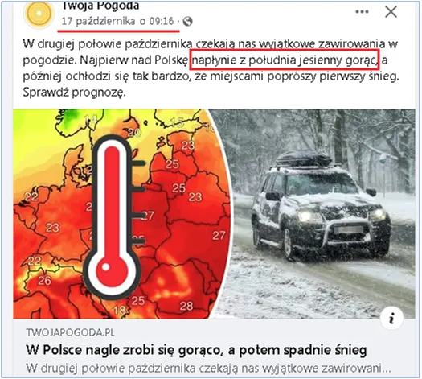
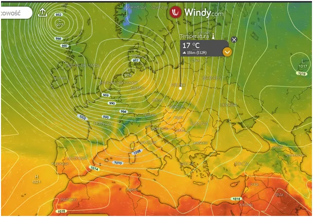
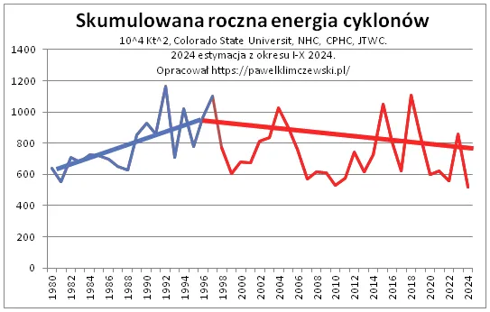
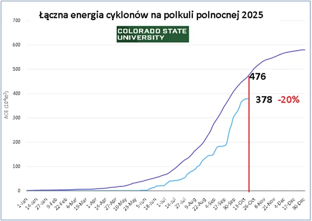
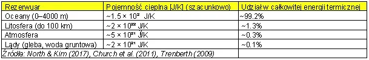

“Jesienny gorąc” pilnie poszukiwany! (w mainstreamie)
Szukajmy go zanim zasypie nas śnieg i nacieszmy się globalnym ociepleniem przed zimną jesienią.
Szury z głównego nurtu nie mogą się pogodzić z faktami, nawet ich nie zastanawia prosta obserwacja, że nasz główny sojusznik wszystkie te bzdury wyrzucił do kosza i musimy się spodziewać kliku chłodnych dekad, co opisałem w kilku miejscach, ale najbardziej syntetycznie chyba tu : https://pawelklimczewski.pl/2024/10/27/cyklony-i-slonce-postscriptum/

Wszyscy pamiętamy październikowe ocieplenia, jak złota polska jesień ładowały nasze akumulatory przed listopadem. Niestety na podobieństwo kwietnia, maja, czerwca po krótkim lecie doświadczamy sporych chłodów i północnych wiatrów. Mimo, że na kilka dekad relacje Ziemia-Słonce każą nam spodziewać się ochłodzenia to obecnie jeszcze jesteśmy w tym lepszym okresie i sam jestem zaskoczony bilansem roku 2025. Dla nowych czytelników bloga raport o tym jest tu: https://pawelklimczewski.pl/2024/02/03/kosmiczna-prognoza-do-2045-globalne-oziebienie/

Do końca roku jeszcze chwila, ale wykres z bilansem cyklonów na półkuli północnej nie daje złudzeń. Oceany są zimne a lody wokół Antarktydy bardzo daleko wysunięte w stronę Afryki i ciepłych wód Pacyfiku.

Bardzo lubię modele matematyczne, przewidywanie złożonych procesów itp., ale tu wystarczy prosta jak cep prawda, skoro ocean zamarza to znaczy, że jest zimniej niż w czasach, kiedy tam nie zamarzał. I teraz uwaga: w oceanach jest przechowywane ponad 99% ciepła, jakiego doświadczamy żyjąc na powierzchni planety. Atmosfera jest tyko cienkim welonem, przez który to ciepło wymieniane jest z Kosmosem.

Para wodna w ok. 95% decyduje o efekcie cieplarnianym, czyli o spowolnieniu stygnięcia atmosfery, CO2 ma znikome, w okolicach równika nawet setki razy mniejsze znaczenie w tym procesie. O tym tutaj: https://pawelklimczewski.pl/2025/04/28/efekt-cieplarniany-co-to-jest-oraz-dlaczego-nie-mozna-zagotowac-wiadra-wody-na-swiecy/
Jedna z ciekawszych informacji w tym tygodniu to doniesienie, że potentat morski MERSK nie odbierze ze stoczni wykończonego statku specjalistycznego do stawiania wiatraków wokół wybrzeża USA. Strata raptem pół miliarda dolarów, ale lepiej teraz z tym szaleństwem skończyć niż pchać się w dodatkowe koszty. Panowie szury z mainstreamu ! Już wolno !
Paweł Klimczewski